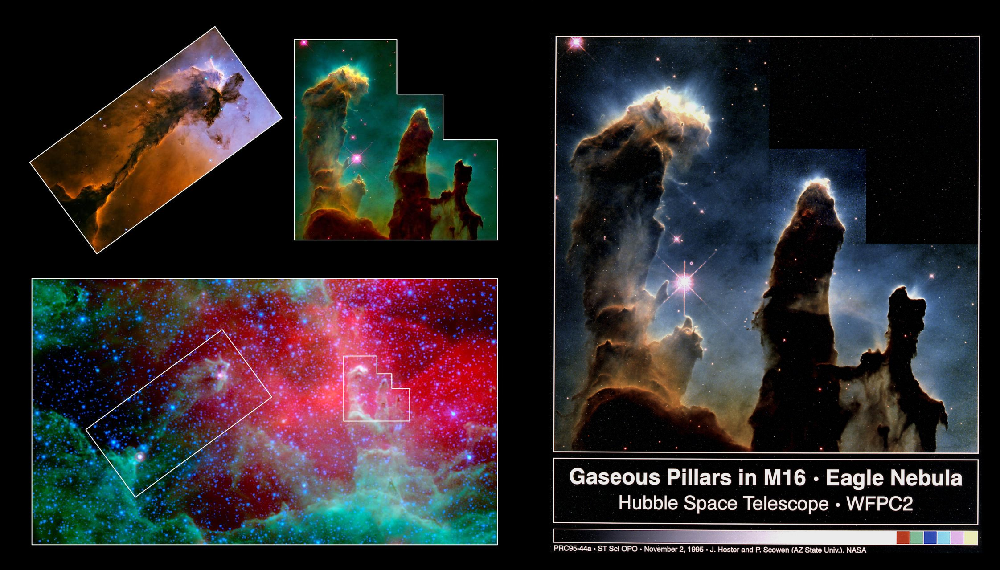

Messier 16 :: Eagle Nebula
Here there will be a nice intro to the Eagle nebula, also known as M16. Many points will be made and interesting facts pointed out.


The Pillars of Creation
This is where the rundown of the PoC goes. It will go through what they are, why they are famous and some brief history of our relation to the pillars. It will then shift into the context of the unwrap below, talking about the pocs and standalone pillars as features in the center of m16.

The pillars of the Eagle nebula, as seen in infrared light by NASA's Spitzer Space Telescope (bottom) and visible light by NASA's Hubble Space Telescope (top insets).
Credit: NASA/JPL-Caltech/STScI/ Institut d'Astrophysique Spatiale
(source)
This image was taken on April 1, 1995 with the Hubble Space Telescope Wide Field Planetary Camera 2.
Red shows emissions from singly-ionized sulfur atoms, green shows emissions from hydrogen, and blue shows light emitted by doubly-ionized oxygen atoms.
Credit: J. Hester & P. Scowen (AZ State Uni.)/NASA
(source)